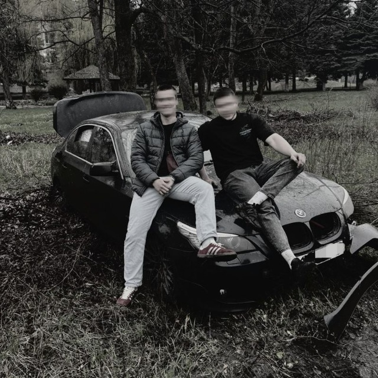

О разработчике
Страница с информацией об авторе учебного проекта.
Верниченко Иван Васильевич

Я родился в Донецке. Сейчас учусь на 3 курсе направления «ИВТ» Донецкого государственного университета. Мне нравится разбираться в новых технологиях и превращать учебные задания в аккуратные работающие проекты.В свободное время увлекаюсь компьютерными играми, прогулками по городу и изучением английского языка. Для меня программирование — это способ постепенно создавать полезные и понятные вещи.Личный принцип: сначала понять задачу, потом писать код.
Профессиональные навыки
Python75%
C++40%
C#68%
HTML70%
Учебная цель
Научиться уверенно применять HTML5, CSS и JavaScript, а затем создавать более крупные приложения.
Условная самооценка общего прогресса.